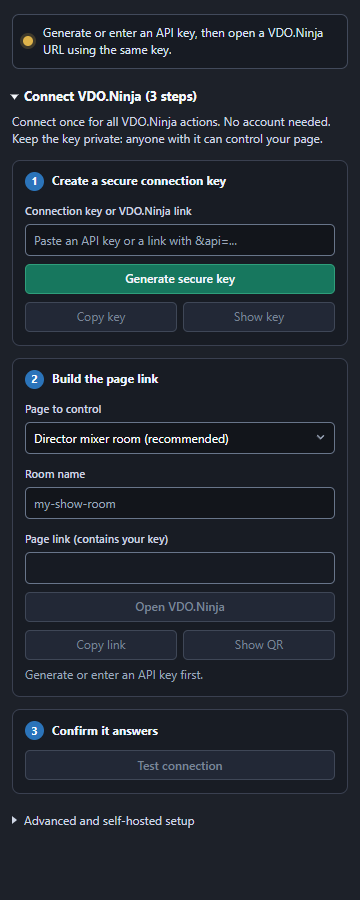
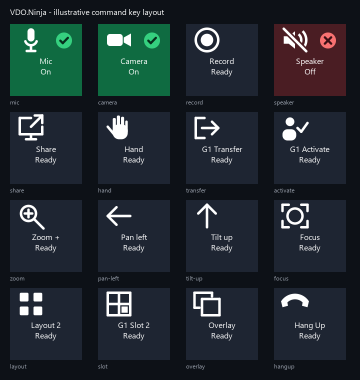

Run your VDO.Ninja show from Stream Deck
Mute guests, switch scenes, move PTZ cameras, and adjust audio from Stream Deck keys and dials. Every key shows live state from your VDO.Ninja page. No account, and no extra software.
Windows 10+ or macOS 12+ · Stream Deck app 6.8+ · Works with Stream Deck hardware and Stream Deck Mobile
Narrated, with captions. Recorded live: the plugin controls a real director room with two test guests.
What you can control
One plugin, the whole control surface
Keys for the things you press, dials for the things you turn. Every action connects to the same VDO.Ninja page.

Connection Status
Set up the connection once and see at a glance whether your page is answering.
Local Control
Your own mic, camera, speaker, recording, and screen share, including push-to-talk.
Guest Command
Mute a guest, hide their video, change volume, send a message, transfer, or hang up.
Select Guest
Pick who your other keys control, or step to the next or previous guest.
Guest Scene
Add or remove a guest from a scene. The key stays lit while they are in it.
Guests List
See who has joined, or who is in a scene, right on a key.
Mixer Control
Change the layout, assign mixer slots, mute everyone, or move all guests to another room.
PTZ Key and Dial
Pan, tilt, zoom, and focus supported cameras, with smooth control on Stream Deck + dials.
Value Dial
Turn to adjust volume, audio panning, bitrate, or buffer delay. Press to reset.
Custom Command
Send any VDO.Ninja API command for advanced setups.
Setup
Connected in about a minute
The plugin creates a private key and builds the VDO.Ninja link for you.
Install
Download ninja.
vdo. and double-click it. Stream Deck adds the VDO.Ninja actions.streamdeck. streamDeckPlugin Connect
Drag Connection Status onto a key, click Generate secure key, enter your room name, and click Open VDO.Ninja.
Add your controls
Click Test connection, then drag in the keys and dials you need. They all share the same connection.


Live feedback
Keys that show what is really happening
The plugin reads state back from your VDO.Ninja page, so keys stay correct even when someone changes things in the browser.
- Green when on, red when muted or off, with a clear icon for each command.
- Guest names and positions in key titles, with your own templates.
- Risky actions like hang-up ask for a second press.
- If a command fails, the key's settings panel says why.
FAQ
Common questions
Do I need Bitfocus Companion or a VDO.Ninja account?
No. The plugin talks to your VDO.Ninja page directly through its API. You only need the Stream Deck app and a browser tab with your VDO.Ninja page open.
Is my connection private?
The plugin generates a random key for you. Anyone with that key, or the link that contains it, could control your page, so the plugin keeps it hidden until you choose to show it. Use a separate key for each page you control.
Which Stream Deck devices work?
Any Stream Deck with keys, including Stream Deck Mobile. Dial actions need a Stream Deck +.
Can I control PTZ cameras?
Yes, for cameras that support it. Open the camera's VDO.Ninja page with &ptz and allow camera control when the browser asks.
Is it in the Elgato Marketplace?
Not yet. The plugin is in beta and available from GitHub. Download the latest release and double-click the file to install or update.
Something isn't working. Where can I get help?
Start with the setup and troubleshooting guide. If you're still stuck, open an issue on GitHub.
Ready to take control?
Free to download. Install it, generate a key, and your first key works in about a minute.